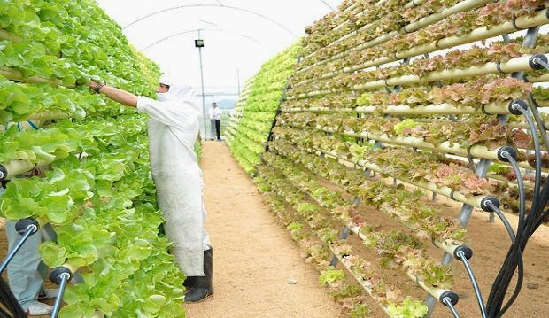
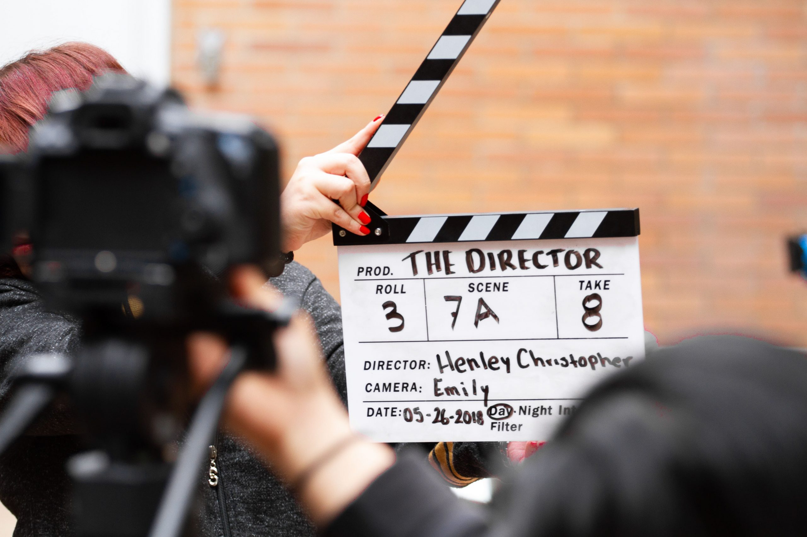
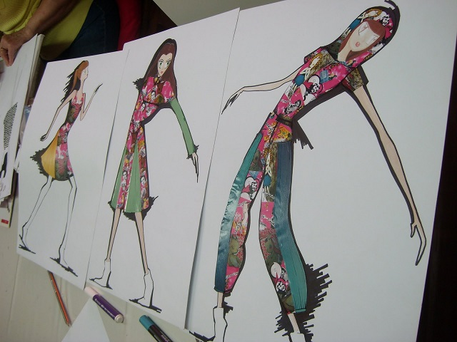

Carreras Universitarias
Puedes encontar mas aqui ..
-
Ingeniería de Alimentos
La ingeniería en alimentos es un campo multidisciplinario que combina microbiología, química, física aplicada e ingeniería. La ingeniería de alimentos incluye, entre otros.Diseña, supervisa y controla procesos de fabricación y conservación de productos alimenticios. Determina las condiciones óptimas de operación del equipo utilizados en el proceso de producción. Realiza control de calidad de productos alimenticios.
Estadistica -
Traductores
La carrera de Cinematografía te prepara con conocimientos de otras áreas o carreras como: Artes Audiovisuales, Realización Cinematográfica, Dirección de Cine y Televisión, Fotografía, Literatura, entre otras. Dependiendo qué rama de la cinematografía te interese puedes escoger entre especializarte en un área u otra.
Estadistica -
Nutricion

La Nutrición es una carrera que pertenece al área de la salud, se encarga de estudiar las relaciones entre la alimentación y la salud de las personas. ... Parte de conocimientos en bioquímica, química orgánica y psicología, pero también comprende aptitudes en la gestión de salubridad alimentaria y servicios de salud
Estadistica -
Cine y Audio Visuales
La carrera de Cinematografía te prepara con conocimientos de otras áreas o carreras como: Artes Audiovisuales, Realización Cinematográfica, Dirección de Cine y Televisión, Fotografía, Literatura, entre otras. Dependiendo qué rama de la cinematografía te interese puedes escoger entre especializarte en un área u otra.
Estadistica -
Agronomia

La agronomía es el conjunto de conocimientos científicos y tecnológicos que rigen la práctica de la agricultura, que es el arte de cultivar la tierra para producir alimentos y otras materias primas útiles para el ser humano
Estadistica -
Periodismo y Comunicaciones
La Comunicación Social abarca desde el periodismo hasta la comunicación interna en una empresa. ... El profesional de Comunicación Social que elija orientarse al periodismo estará relacionado con el “qué” y el “por qué” sobre los fenómenos que suceden en la sociedad: su labor será comprender y comunicar de la mejor manera.
Estadistica
-
Diseño grafico
El diseño gráfico es la profesión que tiene como objetivo crear y transmitir mensajes a través de la imagen. ... El diseño gráfico también es llamado comunicación visual y es una profesión con una gran demanda debido al desarrollo de la tecnología y las formas actuales mediante las que los seres humanos nos comunicamos
Estadistica -
Bioquimica
La bioquímica (también conocida como química biológica) se centra en los procesos de investigación biomédica que ocurren a nivel molecular, que incluyen lo que sucede dentro de nuestras células, estudiando proteínas y orgánulos.
Estadistica -
Fotografia
Básicamente, en todo curso de fotografía aprenderemos a captar y editar imágenes de calidad a partir del conocimiento de los distintos elementos que integran una cámara de fotos, su aplicación práctica en base a diferentes técnicas fotográficas y el manejo de un programa de edición de imagen como es Photoshop.
Estadistica -
Bromatilogia
La bromatología es una especialidad que analiza en profundidad las sustancias que ingiere en ser humano para sobrevivir. La bromatología se ocupa, por tanto, de investigar la composición química, las calorías, los nutrientes, las propiedades físicas y la toxicología de los alimentos, entre otras propiedades
Estadistica -
Veterinaria

La carrera en Medicina Veterinaria y Zootecnia tiene una duración de 5 años. En ella estudiarás a los animales desde nivel celular hasta orgánico, pasando por su fisiología y las distintas patologías que pueden sufrir. ... Recursos y Sistemas de alimentación animal. Toxicología veterinaria
Estadistica -
Diseño de Indumentaria
El diseño de modas es la aplicación de los principios del arte y el diseño a las prendas de ropa y accesorios que las personas utilizan. ... Estudiar Diseño de Modas te da las herramientas necesarias para analizar el mercado global e idear el mejor producto, de acuerdo a la demanda de necesidades y preferencias
Estadistica